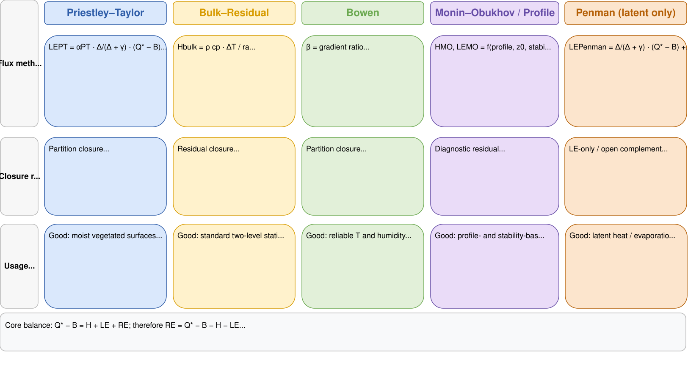

Scientific background for fieldClim heat-flux methods
Jörg Bendix, Chris Reudenbach
2026-06-01
Source:vignettes/fieldclim_theory.Rmd
fieldclim_theory.RmdPurpose of this vignette
This vignette explains the scientific and conceptual background of
the heat-flux methods implemented in fieldClim. It is not a
numerical benchmark and it is not an empirical validation against
independent turbulent-flux measurements. Its purpose is narrower: it
explains what each method family does with the surface energy balance,
which terms are measured or supplied as station inputs, which terms are
estimated, which terms are assumed through closure, and which terms
remain unresolved.
fieldClim is designed for weather-station based
microclimate and micrometeorological analysis. Such stations may provide
net radiation, soil heat flux, air temperature, humidity and wind
profiles, but they usually do not provide the high-frequency wind and
scalar data required for full eddy-covariance processing. The package
therefore implements physically interpretable approximation and
diagnostic methods rather than a complete eddy-covariance workflow.
The central question is not which method is “the true” one. The central question is how each method treats the unknown part of the energy balance. Some methods force the available energy to be fully divided between sensible and latent heat. Some estimate one flux first and assign the remainder to the other flux. Some estimate only latent heat. Some estimate profile-based turbulent fluxes and leave the remaining energy-balance difference visible as a diagnostic residual.
FieldClim scope and evidence boundary
Eddy covariance is often used as the direct field reference for turbulent sensible and latent heat fluxes because it estimates turbulent exchange from high-frequency covariance between vertical wind and scalar fluctuations. However, eddy covariance is not a simple truth source. The surface energy balance often does not close even at well-instrumented flux sites. This problem has been documented for individual sites, synthesis studies and FLUXNET-scale analyses. Reported causes include storage terms, advection, landscape heterogeneity, footprint mismatch, instrumental uncertainty, low-frequency turbulent motions and scale mismatch between radiative, soil and turbulent-flux measurements.
This matters for fieldClim: if even direct
turbulent-flux systems frequently show energy-balance non-closure, then
station-based approximation methods must not be presented as if formal
closure proves physical correctness. Formal closure is a property of a
method. It is not, by itself, a validation result.
Surface energy balance and package sign convention
The common reference point is the surface energy balance.
Microclimatological and micrometeorological texts use partly different
symbols for the same physical quantities. fieldClim uses
implementation names such as rad_bal,
soil_flux, sensible_* and
latent_*. These are package fields and output names, not a
separate theoretical notation.
| Quantity | Common notation | fieldClim field or output | Positive direction or meaning in fieldClim |
|---|---|---|---|
| Net radiation | Q* or Rn | rad_bal | net radiative energy input at the surface |
| Soil heat flux | B or G | soil_flux | heat flux into the soil |
| Sensible heat flux | H or L | sensible_* | heat flux away from the surface |
| Latent heat flux | LE or V | latent_* | heat flux away from the surface |
| Available turbulent energy | Q* minus B; Rn minus G | rad_bal minus soil_flux | energy available for sensible and latent heat fluxes |
With storage and additional transport terms omitted, the reduced teaching balance is:
\[ R_n = G + H + LE \]
Therefore the energy available for turbulent heat fluxes is:
\[ A = R_n - G \]
and the reduced closure form becomes:
\[ A = H + LE \]
In the teaching notation used in parts of the original
fieldClim material, the same balance is:
\[ Q^* - B = L + V \]
The package convention is: soil_flux is consumed as a
positive heat flux into the soil, while positive sensible and latent
heat fluxes are interpreted as fluxes away from the surface.
Energy-balance closure as a modelling decision
The reduced balance is easy to write down, but it is not automatically observed in real field data. Radiation, soil heat flux, sensible heat and latent heat are not measured at exactly the same place, at the same effective footprint, with the same time response, or with the same uncertainty. In addition, energy may be stored in the air column, vegetation, biomass, water, litter or the upper soil layer. Energy may also be transported horizontally by advection or by coherent structures over heterogeneous terrain.
For this reason, the more honest diagnostic form is:
\[ R_E = A - H - LE \]
or equivalently:
\[ R_E = R_n - G - H - LE \]
Here, R_E is the unresolved energy-balance residual. It
should not be interpreted as one single physical flux. It is a mixed
remainder. It may include storage, advection, dispersive transport,
footprint mismatch, measurement error, timing mismatch, parameterization
error and model error.
The important point is that different method families treat this remainder differently. They may use the same balance frame, but they do not give the same status to all terms. Some terms are measured or supplied as station inputs. Some are estimated by empirical or profile equations. Some are assumed by forcing closure. Some are left unresolved.
A simple non-meteorological way to read the problem is this: the equation tells us what should add up. The method decides what to do when not all parts are known.

Energy-balance closure approaches in fieldClim
The heat-flux methods in fieldClim can be understood as
four energy-balance closure approaches.
1. Partition closure
Priestley-Taylor and Bowen-ratio methods are partitioning methods. They assume that the available energy can be fully divided into sensible and latent heat within the reduced balance:
\[ R_E = 0 \]
The method then decides how available energy is split between
H and LE. Priestley-Taylor uses an empirical
evaporation relation. Bowen uses a gradient-derived ratio between
sensible and latent heat.
This means the balance is closed by construction. It does not mean that the closure has been independently measured. The hidden uncertainty lies in the empirical coefficient, the gradient ratio, the omitted storage and advection terms, and the measurement/model inputs that define available energy.
2. Residual assignment
Bulk-Residual uses a different logic. It first estimates sensible
heat as H_bulk. The remaining available energy is then
assigned to latent heat:
\[ LE_{res} = A - H_{bulk} \]
or:
\[ LE_{res} = R_n - G - H_{bulk} \]
Here latent heat is the residual term. Any error in net radiation,
soil heat flux or the bulk sensible-heat estimate is passed directly
into LE_res.
3. LE-only open balance
Penman and Penman-type methods estimate latent heat. In
fieldClim, the Penman path does not provide a paired
package-defined sensible heat flux. The remaining balance term is:
\[ R_{Penman} = A - LE_{Penman} \]
This remainder should not simply be called sensible heat. It may contain sensible heat, storage, advection, dispersive exchange, footprint mismatch and error terms.
4. Profile-diagnostic open balance
Monin-Obukhov and profile methods estimate turbulent fluxes from profile, roughness and stability assumptions. They are not forced to close the available energy balance. Their residual is:
\[ R_{profile} = A - H_{profile} - LE_{profile} \]
This residual is useful. It shows whether the profile-based flux estimates, the radiation balance and the soil heat flux are mutually consistent. It should not be removed by forcing the method to close the balance.
| Method family | What the method primarily does | Closed by construction? | Unknown or residual term | Interpretation rule |
|---|---|---|---|---|
| Master balance | defines the accounting frame | no | energy-balance residual | the residual is a composite term, not one physical flux |
| Radiation and soil helpers | provides or models input terms | no | method-dependent downstream residual | input consistency controls all downstream balances |
| Priestley-Taylor | partitions available energy | yes | hidden in closure and empirical coefficient assumptions | formal closure is not physical validation |
| Bowen ratio | partitions available energy by a gradient-derived ratio | yes, only for finite uncapped cases | hidden in ratio, gradient and denominator assumptions | singular and capped cases must not be read as exact closure |
| Bulk-Residual | estimates sensible heat first and assigns the remainder | yes, if the bulk sensible heat estimate is finite | latent heat is the assigned residual | errors in radiation, soil heat flux or sensible heat enter the residual latent heat |
| Penman / Penman-type | estimates latent heat only | no | complement of latent heat remains unresolved | the complement may contain sensible heat, storage, advection and error |
| Monin-Obukhov / Profile | estimates fluxes from profile and stability assumptions | no | remaining energy-balance difference is diagnostic | do not force-close; use the residual as a diagnostic |
Method families
Priestley-Taylor path
The Priestley-Taylor path estimates latent heat flux from available energy and an empirical coefficient. The implemented teaching path follows the structure:
\[ LE_{PT} = \alpha \frac{\Delta}{\Delta + \gamma} (R_n - G) \]
The corresponding sensible heat flux is the remaining available energy:
\[ H_{PT} = (R_n - G) - LE_{PT} \]
Therefore the closure invariant is:
\[ H_{PT} + LE_{PT} = R_n - G \]
This is useful for a beginner-safe workflow because it needs fewer
profile assumptions than Bowen or Monin-Obukhov and avoids the Penman
LE-only ambiguity. The limitation is also clear: Priestley-Taylor hides
much of the surface-atmosphere coupling in the coefficient
alpha and in helper terms such as the saturation-curve
slope and the psychrometric constant. It is stable and transparent for
teaching, but it is not a direct measurement of turbulent exchange.
Bowen-ratio path
The Bowen-ratio method partitions available energy using the ratio of sensible to latent heat flux:
\[ \beta = \frac{H}{LE} \]
If the ratio is known, the energy balance gives:
\[ H = \frac{\beta}{1 + \beta} (R_n - G) \]
and:
\[ LE = \frac{1}{1 + \beta} (R_n - G) \]
For finite uncapped denominators, the closure invariant is:
\[ H + LE = R_n - G \]
The implemented fieldClim Bowen ratio is based on a
potential-temperature gradient and an absolute-humidity gradient:
\[ \beta = \gamma_{code} \frac{\Delta \theta / \Delta z}{\Delta AH / \Delta z} \]
where:
\[ \gamma_{code} = 0.00066 (1 + 0.000946 t_1) \]
The important documentation point is that this is not merely a symbol-only formula. The implementation converts air temperature to potential temperature, converts relative humidity to absolute humidity, and then forms the gradient ratio.
The Bowen path is physically meaningful when gradients are resolved and representative. It is also fragile: small humidity gradients, sign changes and near-zero values of the denominator can create very large fluxes. Numerical caps are safeguards. When a cap is active, exact closure should not be claimed.
Bulk-Residual path
The Bulk-Residual path combines a wind- and temperature-gradient estimate of sensible heat flux with a residual latent heat flux. It is not a direct flux measurement. It is a station-data approximation in the aerodynamic-resistance family.
The sensible heat calculation follows the general form:
\[ H_{bulk} = \rho c_p \frac{\Delta T}{r_a} \]
with:
\[ \Delta T = T_1 - T_2 \]
A simple neutral resistance formulation is:
\[ r_a = \frac{\ln(z_2 / z_1)}{k u_{scale}} \]
The current package default uses a wind-speed scale based on observed
wind speed. If two wind heights are available, the default uses the
arithmetic mean of v1 and v2; otherwise it
uses v1.
A two-height station can also support a neutral profile-derived friction velocity:
\[ u_* = k \frac{u_2 - u_1}{\ln(z_2 / z_1)} \]
and then:
\[ r_a = \frac{\ln(z_2 / z_1)}{k u_*} \]
This is conceptually stronger when the two-height wind profile is reliable, but it is not automatically more robust. If the wind-speed difference is small, noisy or changes sign, the estimated friction velocity becomes unstable. A roughness-derived friction velocity is also possible when only one wind speed is available, but it then depends on roughness length assumptions from surface type or obstacle height.
The residual latent heat flux is:
\[ LE_{res} = R_n - G - H_{bulk} \]
Therefore the Bulk-Residual workflow closes available energy by construction:
\[ H_{bulk} + LE_{res} = R_n - G \]
This closure is algebraic. It does not prove that H_bulk
is a perfect physical estimate. It means that the residual latent heat
flux inherits all errors in Rn, G and the bulk
sensible heat estimate.
Bulk-Residual: exchange estimate and residual closure
Bulk-Residual must be read on two levels. First,
sensible_bulk is estimated from a temperature gradient and
an exchange-velocity scale. This exchange scale may be a simple
mean-wind approximation, a profile-derived friction velocity, or a
roughness-based friction velocity. With
exchange_velocity = "u_star_profile", the sensible-heat
estimate uses the two wind measurement heights and moves closer to a
neutral profile-transfer logic. With
exchange_velocity = "u_star_roughness", the estimate
depends on a roughness-length assumption.
The closure logic, however, remains residual.
latent_bulk_residual is still calculated as the remaining
available energy after subtracting sensible_bulk:
latent_bulk_residual = rad_bal - soil_flux - sensible_bulkA near-zero closure residual therefore confirms the algebraic residual construction. It does not prove that the selected exchange-velocity assumption is physically correct.
Penman-type latent heat path
The Penman family combines an energy term and an aerodynamic
vapour-pressure term. In fieldClim,
latent_penman() is a latent-heat method only. It does not
return a paired sensible heat flux.
The package convention keeps the energy term as:
\[ R_n - G \]
The Penman path uses saturation vapour pressure, actual vapour pressure, vapour-pressure deficit, slope of the saturation curve, psychrometric terms and resistance assumptions. Conceptually, it asks how much latent heat exchange is implied by radiation, atmospheric demand and resistance terms. It does not answer, inside this package, how the remaining available energy is divided between sensible heat and unresolved storage or transport terms.
The relevant package distinction is:
\[ \text{Penman path} = LE \text{ only} \]
There is no package-defined H_Penman. The complementary
term is:
\[ R_{Penman} = R_n - G - LE_{Penman} \]
This should be interpreted as an unresolved complement, not as measured sensible heat.
Monin-Obukhov and profile methods
Monin-Obukhov similarity theory and related profile-gradient methods attempt to represent turbulent transfer through vertical gradients, roughness, stability and surface-layer scaling. In package interpretation, the Monin/Profile path is diagnostic-only.
The diagnostic rule is:
\[ H_{profile} + LE_{profile} \]
is not required to equal:
\[ R_n - G \]
The residual is:
\[ R_{profile} = R_n - G - H_{profile} - LE_{profile} \]
This is not a defect. It is a consequence of method class. A profile method estimates turbulent fluxes from profile and stability assumptions, while Priestley-Taylor, Bowen and Bulk-Residual are explicit energy-partition or residual workflows.
The practical issue is numerical robustness. Zero gradients, very small wind shear, invalid height relationships and unstable stability functions can produce extreme outputs. For this reason, Monin-Obukhov outputs should be interpreted together with stability classification and diagnostic warnings. They should not be silently normalized to available energy.
Direct flux measurements and closure literature
The closure interpretation above is not a package-specific bookkeeping trick. It follows the broader micrometeorological literature on surface energy balance closure.
Foken (2008) gives an overview of the energy-balance closure problem and argues that non-closure cannot be reduced to simple measurement error or storage alone. Larger-scale exchange processes over heterogeneous landscapes are central to the problem. Wilson et al. (2002) evaluated energy balance closure across 22 FLUXNET sites and 50 site-years, showing that closure is a network-scale issue rather than a local anomaly. Leuning et al. (2012) describe the surface energy imbalance problem as a mismatch between turbulent fluxes and available energy, and discuss advective flux divergence and related explanations. Mauder et al. (2024) revisit FLUXNET energy-balance closure and explicitly treat closure as a continuing uncertainty for heat and water-vapour flux assessments.
For fieldClim, the consequence is direct: closure tests
are necessary implementation contracts, but they are not empirical
validation. A method can close exactly because its equations force
closure. Another method can leave a residual because it is diagnostic.
Neither status alone proves that the flux estimate is physically correct
or incorrect.
Practical interpretation in fieldClim
The methods should be read as complementary diagnostics.
Priestley-Taylor is the most stable teaching path. It partitions available energy with few profile assumptions and closes exactly by construction.
Bowen is a gradient-ratio partition method. It is physically meaningful when gradients are well resolved, but it is highly sensitive to small humidity gradients and near-singular denominators.
Bulk-Residual is transparent and uses directly available station data: temperature gradient, wind speed, net radiation and soil heat flux. Its latent heat flux is residual and therefore closes exactly, but the sensible heat component is a simplified neutral bulk estimate.
Penman is a latent-heat-only combination method. It should be used as
an LE estimate, not as an energy-closing H and
LE pair.
Monin-Obukhov/Profile is a diagnostic profile and stability path. It is methodologically important, but its output should be checked for zero-gradient, low-wind and stability singularities. It should not be forced to close available energy.
A robust package summary is therefore:
fieldClimimplements common micrometeorological approximation families for heat-flux analysis from weather-station data. Priestley-Taylor, Bowen-ratio, Penman-type, bulk-resistance/residual and Monin-Obukhov/profile methods differ in data requirements and assumptions. Some methods close the available energy by construction; others are latent-heat-only or diagnostic profile estimates. Formal closure is not physical validation, and open residuals can be diagnostically meaningful.
References
Ala-Konni, J., Mammarella, I., Ojala, A., et al. (2022). Validation of turbulent heat transfer models against eddy-covariance flux measurements over a seasonally ice-covered lake. Geoscientific Model Development, 15, 4739-4755. https://doi.org/10.5194/gmd-15-4739-2022
Allen, R. G., Pereira, L. S., Raes, D., & Smith, M. (1998). Crop evapotranspiration: Guidelines for computing crop water requirements. FAO Irrigation and Drainage Paper 56. Food and Agriculture Organization of the United Nations.
Billesbach, D. P., Arkebauer, T. J., Walters, D. T., & Verma, S. B. (2024). Intercomparison of sensible and latent heat flux measurements from combined eddy covariance, energy balance, and Bowen ratio methods above a grassland prairie. Scientific Reports, 14, 21486. https://doi.org/10.1038/s41598-024-67911-z
Foken, T. (2006). 50 years of the Monin-Obukhov similarity theory. Boundary-Layer Meteorology, 119, 431-447. https://doi.org/10.1007/s10546-006-9048-6
Foken, T. (2008). The energy balance closure problem: An overview. Ecological Applications, 18(6), 1351-1367. https://doi.org/10.1890/06-0922.1
Leuning, R., van Gorsel, E., Massman, W. J., & Isaac, P. R. (2012). Reflections on the surface energy imbalance problem. Agricultural and Forest Meteorology, 156, 65-74. https://doi.org/10.1016/j.agrformet.2011.12.002
Mauder, M., Jung, M., Stoy, P., et al. (2024). Energy balance closure at FLUXNET sites revisited. Agricultural and Forest Meteorology, 358, 110235. https://doi.org/10.1016/j.agrformet.2024.110235
Penman, H. L. (1948). Natural evaporation from open water, bare soil and grass. Proceedings of the Royal Society of London. Series A, 193, 120-145. https://doi.org/10.1098/rspa.1948.0037
Priestley, C. H. B., & Taylor, R. J. (1972). On the assessment of surface heat flux and evaporation using large-scale parameters. Monthly Weather Review, 100(2), 81-92. https://doi.org/10.1175/1520-0493(1972)100%3C0081:OTAOSH%3E2.3.CO;2
Prueger, J. H., & Kustas, W. P. (2005). Aerodynamic methods for estimating turbulent fluxes. In J. L. Hatfield & J. M. Baker (Eds.), Micrometeorology in agricultural systems. Agronomy Monograph 47. ASA, CSSA and SSSA.
Wilson, K., Goldstein, A., Falge, E., et al. (2002). Energy balance closure at FLUXNET sites. Agricultural and Forest Meteorology, 113, 223-243. https://doi.org/10.1016/S0168-1923(02)00109-0